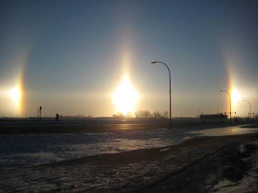
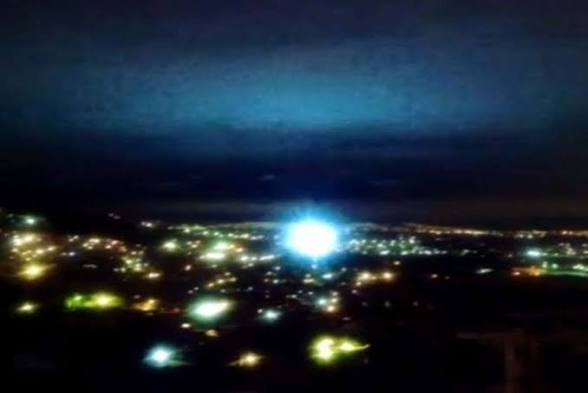

Ray Bowyer, a pilot for the airline Aurigny flying south towards the island of Alderney in the Channel Islands, sighted a UFO. He reported the sighting to an air traffic controller, who told him that a second pilot had seen something similar. In Bowyer's report to the British Civil Aviation Authority, he said he saw two bright, stationary objects. Two passengers on Bowyer's aircraft said that they saw unusual coloured lights at the same time.


Bowyer rejected the suggestion that he had claimed to see an alien vessel, only remarking that he had never seen anything like it before in all his years of flying. When interviewed by the BBC, he accepted the possibility that he had seen earthquake lights,a scientifically-debated phenomenon where flashes of light appear over areas of seismic activity,connected to the earthquake in south-eastern England that took place on 28 April.
In my opinion, yes, it could be a misunderstanding. It could have been a weather phenomena like earthquake lights and sun dogs. However, considering one of the witnesses was a air traffic controller, they probably wouldn't have thought a sundog was a UFO because it wasn't too much of an unusual sight or colour despite it being a relatively rare occurance.